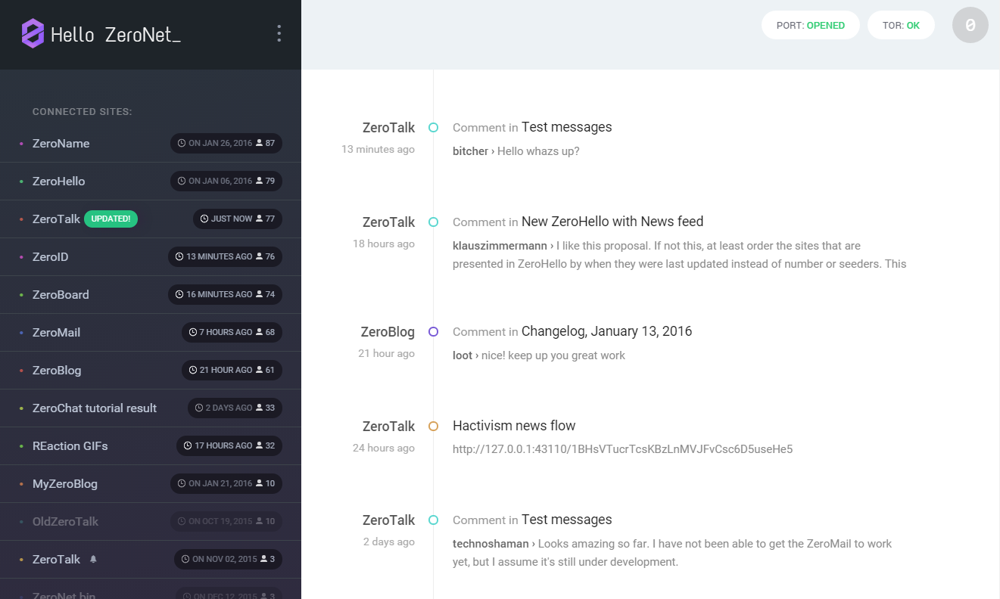
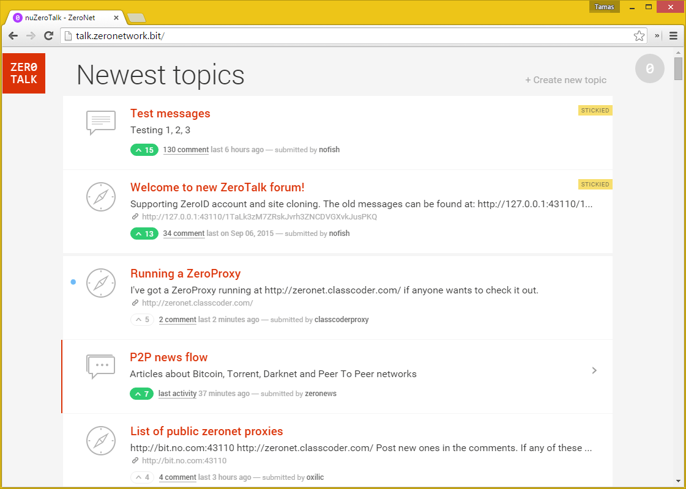

ZeroNet 是什么?
ZeroNet 使用 Bitcoin 加密算法以及 BitTorrent 技术以建立一个 分布式抗审查的网络.
用户可以发布静态或动态网站到 ZeroNet , 访问者可以选择共享这个网站. 网站将会一直在线即使只有一个节点在共享.
每当一个站点被所有者更新, 所有共享它的节点 (访问过此网站的人) 将只会收到网站内容的增量更新.
ZeroNet 带有一个内置的 SQL 数据库. 这让内容很多 (content-heavy) 的站点更容易开发. 这个数据库也会与共享它的节点增量同步.
为什么要使用?
- 我们相信开放, 自由, 无审查的网络.
- 没有审查: 一旦发布就无法删除.
- 不会受单点故障影响: 内容将保持在线即使只有一个节点.
- 无法关闭: 节点无处不在. 内容由用户自愿共享 (Content is served by any user who wishes to).
- 迅速: ZeroNet 使用 BitTorrent 技术使内容发送快过中心化的服务器.
- 离线工作: 即使互联网不可用时也可以访问站点.
- 安全: 内容所有权 (Content ownership) 是使用和 Bitcoin wallet 相同的加密算法加密的.
功能
- 简单, 无需配置即可运行.
- 无需密码的基于 BIP32 的认证: 使用和 Bitcoin wallet 相同的加密算法来保护你的账号.
- 实时更新站点.
- Namecoin .bit 域名支持.
- SQL 数据库支持: 让站点开发更简单并且加快页面加载.
- 匿名: 完整的 Tor 网络支持通过 .onion 隐藏服务 (.onion hidden services) 而不是 ipv4 地址.
- TLS 加密连接.
- 自动 UPnP 端口转发.
- 多用户 (开放代理) 插件支持.
- 在任何浏览器/操作系统上工作.
它是如何工作的?
- 在你安装并运行 ZeroNet 后, 浏览以下地址打开一个站点:
http://127.0.0.1:43110/{zeronet_site_address}(例如http://127.0.0.1:43110/1HeLLo4uzjaLetFx6NH3PMwFP3qbRbTf3D). - ZeroNet 将会使用 BitTorrent 网络来寻找正在做种的节点并且从这些节点下载站点内容 (HTML, CSS, JS...).
- 每个访问过的网站也会被你共享.
- Every site contains a list of all files used in the site in a SHA512 hash and a signature generated using the site owner private key.
- If the site owner modifies the site, then he/she signs a new list and publishes it to the peers. After the peers have verified the files list integrity (using the signature), they download the modified files and publish the new content to other peers.
有关 ZeroNet 加密, 内容更新, 多用户站点的幻灯片 »
截图


更多截图 »
目前的不足
- 没有类似于 Torrent 的文件拆分来支持大文件
- 传输文件时没有压缩~~和加密~~ (已添加 TLS 加密)
- 不支持私有 (private) 站点
帮助这个项目
Bitcoin: 1QDhxQ6PraUZa21ET5fYUCPgdrwBomnFgX
感谢您!
- 更多信息, 帮助, 更改记录, zeronet 站点: http://www.reddit.com/r/zeronet/
- 与我们聊天: #zeronet @ FreeNode 或者在 gitter
- 这里是一个 gitter 上的中文聊天室